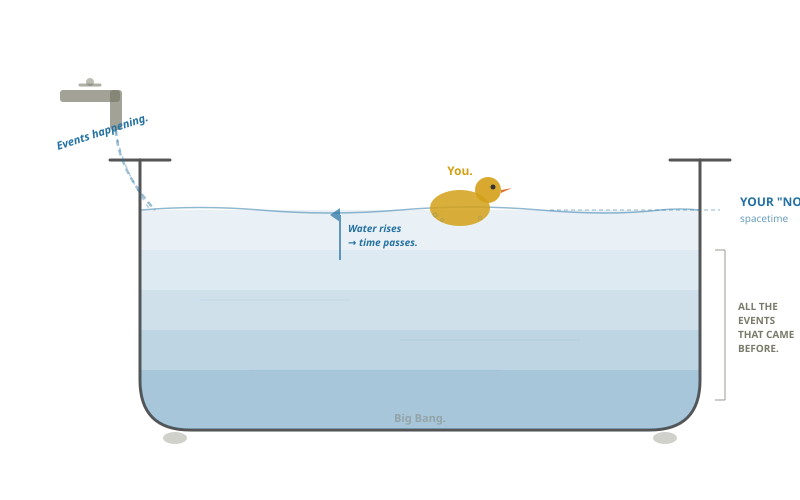
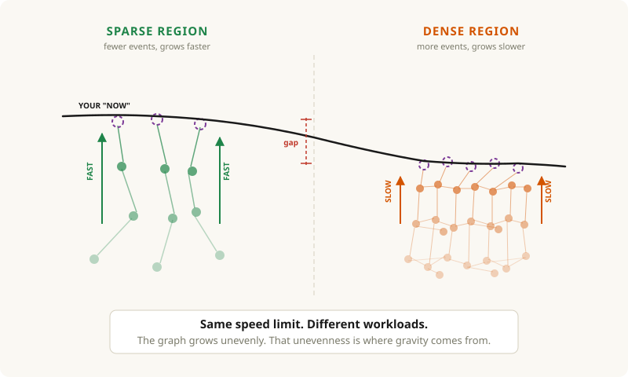
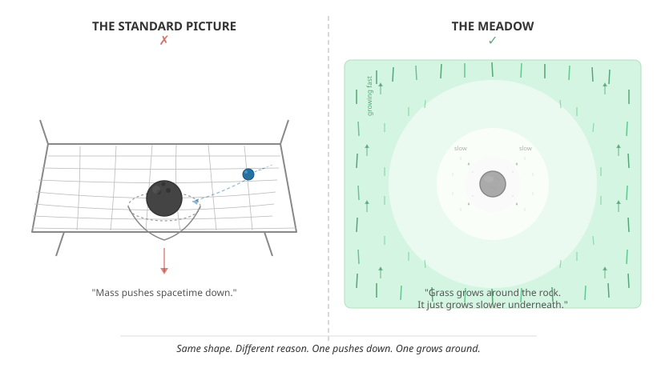
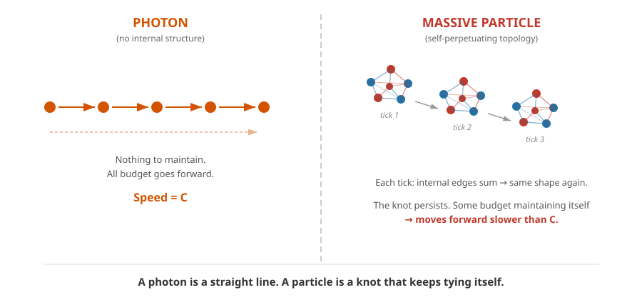
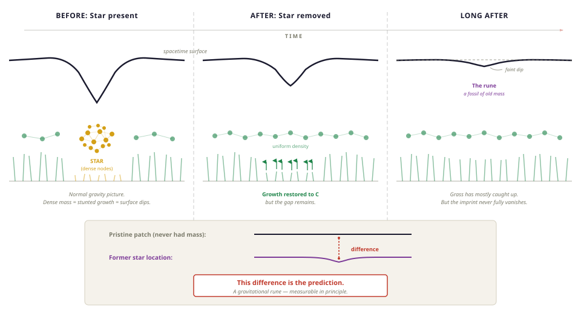
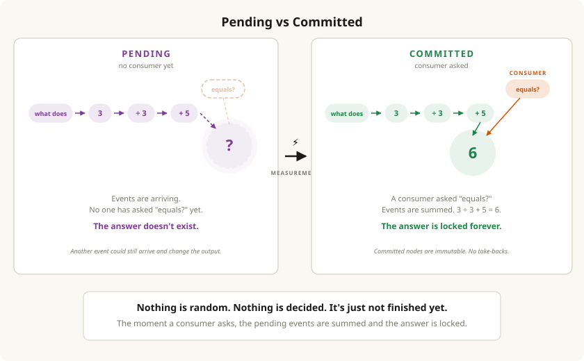
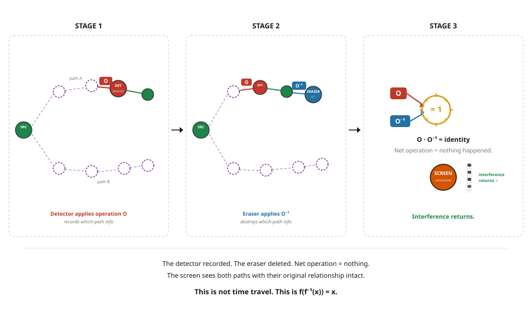

TL;DR: Spacetime curvature isn't fabric deformation, it's differential growth rates. The universe is a growing graph of discrete events, and gravity emerges from different regions growing at different rates. Mass has more to compute per tick, so it grows slower, and the curvature we observe is sparse regions outpacing dense ones. This predicts "gravitational runes" — if mass is removed from a region, that region can never fully catch up to space that was always empty, leaving a permanent geometric deficit that GR does not predict.
This framework draws heavily from causal set theory and Wolfram's physics project, but diverges on the mechanism of curvature, the origin of mass (self-perpetuating topologies in the graph), and quantum mechanics (lazy evaluation — events stay pending until a downstream consumer forces a commit, giving you wave function collapse without randomness or hidden variables).
Authors Note
When someone asks if I have any hobbies, this is it. It might seem odd to "ponder the universe" as a hobby.
But I'd argue it's actually a well-known fact that the best way to spend ANY amount of time on ANY amount of drugs is to sit back and go "YO BUT what IF LIKE…"
My background is in Software, so I have no business writing about spacetime.
But if the music industry can tolerate Rick Rubin, then maybe I can share "taste" for how the universe ought to work.
I am sure the odds of getting committed rise significantly the moment anyone start saying "I have a theory of the universe."
So to get ahead of whoever it was that plotted to get Kanye; Here's what this actually is.
This is my best guess on how it should all work. The odds I am right are about as close to zero as something can be. But if even one concept inspires a thought in someone more capable I'd consider that a win.
Cheers,
A Very Serious Person
Chapter 1: A Duck in a Tub
Imagine a rubber duck floating in a bathtub. Water pours in, time passes, and the duck rises with the water level. From the rubber ducks perspective, reality — everything it experiences — is the surface of the water. But its experience is actually composed of the billions of H₂O molecules it floats on.
Our universe is the same, you exist on a massive ocean of events that all lead you to your "here" and "now". Trace any moment of your life and what you will find is there is always a sequence of events that brought you to where you are now. This idea of "here" and "now", has another name, "space" and "time", or Spacetime.
You are floating on an ocean of past events that all brought you to your "here", and "now".

So what is this "ocean of events"? We are going to refer to them as the Event Graph.
Chapter 2: The Event Graph
So it's not water you are floating on, but a graph.
More specifically, its all the events that have ever happened, going all the way back to the big bang.
These events connect to each other, add together, and bring you to your "here" and "now." The event graph is the bookkeeping ledger of the universe, always growing.
The idea that the universe can be represented as a graph of discrete events is a real branch of physics, and this framework draws heavily from causal set theory, Wolfram's project, and loop quantum gravity.
Intuitively, what we are describing is basic cause and effect. Your "now" didn't appear from nothing, it was built from the past events.
So what does this graph actually look like? A graph is just dots connected by lines. You already know graphs — a family tree is a graph, a recipe is a graph, a road map is a graph.

Ours has four rules:
1. The nodes are events. Not particles. Not objects. Not "Sara went for a run" — there is no Sara in the graph. The dots are events, events are the bookkeeping currency of the universe. What is an Event exactly? To be honest I don't know. It would have to be the smallest unit of change that can occur. For the purpose of this article, I'd suggest it's energy in some form. You're always just logging interactions.
2. Nodes are stateless. This one is a bit counterintuitive, so stay with me. The nodes themselves hold no values. All properties emerge from their position in the graph. Just like in a family tree, you don't write "parent" on a dot. You look at who's underneath it. A node in the event graph works the same way. What it is comes entirely from the paths reaching it and the operations those paths carried. Nodes store nothing. They inherit everything. This matters a lot later.
3. The lines are operations. They carry the math. Each line connects one event to another and says "here's what happened between these two moments." Sum all the operations pointing into any dot and you get the next event. That's how the graph builds the next layer of reality.
4. The lines point forward. Cause to effect. Past to future. The graph only grows. Time is the graph getting taller.
That's the whole machine. Events, operations between them, growing forward. New events are born from the sum of what came before. Your "now" is the newest layer. The graph underneath is every "now" that already happened.
Now, there is one other very important property of this graph. Our universe has a speed limit, and so does our graph. The speed of light (C).
The speed of light has nothing to do with light. It is the maximum rate that change can occur in our universe. The fastest information can travel, and compute, within the graph. So C, is the fastest our graph can "grow".
Some regions of the graph have more going on than others. A star has more events in play than an empty patch of space. A black hole has more going on than a star. Our graph has dense regions and sparse regions.
If the graph has a fixed speed limit for how fast it can process — and dense regions have more to process — then dense regions take longer to get to their next "now" than sparse ones.
This means our graph is not growing evenly. And that unevenness is where things get interesting.

Chapter 3: Spacetime
Open up any physics textbook on spacetime and you will see a picture of a bowling ball on a trampoline. Mass warps the fabric of spacetime, and this curvature gives us gravity.

In our model, this is inaccurate. The end result is correct, but the mechanism for how mass warps spacetime is wrong.
We said spacetime is the surface of our event graph, and our graph is not growing evenly. Dense regions have more to process, so they grow slower. Sparse regions race ahead.
So here's our claim: Mass does not warp spacetime like a bowling ball on a trampoline. Mass causes regions of the graph to grow slower than the regions around them.
A better analogy would be to imagine a meadow with a rock in it, the grass around the meadow grows freely, but grass under the rock grows more slowly. The end result is it might look that the rock warped the rest of the grass, but we are saying the curvature is the result in a difference in growth rates NOT a warping of fabric.
Same shape. Different mechanism. And the mechanism matters, because it changes what spacetime is. It's not a fabric being deformed. It's a graph being outpaced.
This is the core claim of this entire framework. General Relativity describes the shape of spacetime with extraordinary precision. It tells you what mass does to geometry. But it doesn't tell you why.
We're proposing one: mass is computationally dense, the graph has a processing speed limit, and mass regions lag behind their surroundings. The curvature is real. The shape is the same. But now there's a reason for it.
But why would mass slow the growth of the graph? What is mass, actually, in a universe made of events?
Chapter 4: Mass
To answer the question of mass I want to first talk a bit about time.
Time, is an interesting concept in physics, because our equations work equally well both forwards and backwards in time.
Imagine what it would look like to you if "time", stopped. Well, nothing would change. Our perception or what we call time is really a measure of change in our local region.
We have already said that the speed of light C, is really the fastest information flows through our graph.
We also said that our graph is composed of events, and that the idea of objects or photons do not exist at the graph level. So what is mass then?
Mass, objects, particles are all the result of stable configurations within the graph. A collection of events that join together and form a specific "shape" or result if you will, and whose topology repeats into the "next now".
When we go to build the next layer of reality, to move from current now to future now, we sum all of those events. And for mass — when you sum all the operations together — it just generates the same shape again. That's it. Mass is a self-perpetuating topology within the event graph.

Regions of the graph which are simple structures and can be processed in a single tick, grow at the speed of light, where regions which have more dense topologies grow at a slow rate and give rise to time dilation, which gives rise to curvature and finally gravity emerges.

To be honest this is a bit of a head fuck, but stay with me. You think of mass as something that just is. But really it's something that existed, and then the bookkeeping decided it should exist again.
Imagine, your boss pays you $1000 (event 1), your landlord charges you $1000 (event 2). Those sum together so you were poor then, and you are poor now. Two events resulting in a stable configuration where you forever remain poor. If those events happen again in the next now, you have a self-perpetuating topology of poverty.
This has an implication worth flagging. If mass is a topology that regenerates itself under summation, then the specific particles we observe — electrons, quarks, photons — are the specific shapes that happen to be stable.
Chapter 5: Gravitational Runes
What would happen if the sun disappeared?
In the standard model, mass warps spacetime like a bowling ball on a trampoline. Remove the ball, the trampoline snaps back. Spacetime restores to flat.
In our model, something different happens. The sun was a dense region of the graph, which had a slower growth rate. Remove it, and the growth rate in that region is restored. The grass starts growing at full speed again.
Compared to Earth, the region with the sun will eventually "catch up", and surpass earth. But if you compared it to a region of space that never had mass, and was always growing at rate C, it can never catch up. There will always be a deficit. The region of the sun will always be behind the region of space that never had mass in the first place.

Now, the math might not work out so that this is even possible. As far as I know you can't just "delete" a planet without energy being emitted into surrounding areas. Thus impacting their rates of change. So maybe the math does not work out where this is something that can exist. But it would be a prediction of this conceptual framework that is novel to the standard.
But if you could find a pristine patch of space that never had mass and compare it to a region that used to — and if there's a measurable difference in the local geometry — that would be evidence of a gravitational rune. And that would be a prediction this model makes that GR does not.
This claim is different from gravitational wave memory effect. This is a permanent deficit left by former mass.
Part 2: The Quantum World
So that was the big stuff.
Realistically you could/should stop here. But no crackpot theory of everything is complete unless it tries to tackle the quantum world.
In our model, it's all a graph but Quantum mechanics shows up when we focus on how the graph changes. Curvature is what the graph looks like when you zoom out. Wave function collapse is what it looks like when you zoom in.
So lets zoom in. How exactly do we get from this "now" to the next one? Change happens one event at a time. And that's where things get strange.
Chapter 6: Pending vs Committed
If it's all events and operations underneath, how do we ever go from "now" to the "next now"?
In our model, the graph is always accumulating events. The graph is always growing.
Energy is always interacting, edges are always arriving. But those events don't produce an answer or the next now, until someone asks them. Our graph is lazy loaded.
This is the core mechanism of the quantum world in our model. Events accumulate, but they are not summed/committed until a downstream event needs the result. We're going to call that downstream event a consumer.
No consumer? The events keep arriving. The node stays pending. Another event could still show up and change the output. This is like someone asking you a math question verbally.
You hear: "what does"…"3"…"divided by"…"3"…"plus"… "5"… "equal?"…
Until they say "equals?" you need to wait for all the numbers and operations to arrive. The graph works the same way. It keeps track of all the operations and values but until a consumer asks "equals?", it's waiting to answer.

So if these pending events are in our graph, and our graph is our reality, then they should show up in our reality.
And they do. Physicists call it a wave function. It's a probability distribution that describes where a particle might be and what it might do. When you measure the wave "collapses" and you get a single definite answer.
In our model, the wave function is what a pending node looks like from the surface. It's not that the particle is in many places at once. It's that the events haven't been summed yet. The answer genuinely doesn't exist. Not because it's hidden. Not because we're ignorant. Because the computation isn't finished.
What Counts as a Consumer?
No idea to be honest. It's a bit of a head scratcher this one, the measurement problem is an outstanding question in physics.
But here is my take on how it ought to work. There are two observations that help:
- Decoherence is gradual. We can have partial positional information and get partial interference. The more sensitive the detector, the more the fringes fade.
- The Heisenberg uncertainty principle ties position and momentum together, pinning one disturbs the other.
In both cases, positional information seems to be what matters. So here is the claim: a commit happens whenever positional information is resolved.
A Consumer is any region of the graph that has a dependency on a pending node's positional information to produce its next state.
In cases where positional information is not fully resolved, the interaction can write edges into the graph without creating a new node, partial information, partial decoherence, partial loss of interference. The pending computation narrows but doesn't commit.
From the Heisenberg uncertainty principle, we can also infer that commits themselves produce outgoing edges which alter future reads.
Chapter 7: Thou Shall Not Commit Random
So there is this very famous experiment that started this whole gang war. It's called the double slit experiment. I highly suggest you check out the PBS SpaceTime content on it for the full breakdown.
But before we get into it, here's the claim we're going to make and then defend:
There is no random.
The long standing debate in physics is whether quantum mechanics is fundamentally random. Einstein said "God does not play dice." Experiments have been done to prove there are no local hidden variables, no secret answer stored inside the particle.
Our model agrees, and takes a superdeterminism position. There are no local hidden variables, But the outcome isn't random either. It's in transit.
Our graph has a speed limit (C), so not all events arrive at the same time. In physics, your light cone is everything that could ever reach you, given the speed limit of C. We're going to define something narrower. Your event cone is the set of events that will reach a node while it's still pending, before it's asked to commit.
Imagine your brother is expecting a baby today. You're driving to a family function. You know someone is going to ask: "are you an uncle yet?" Right now, what's the answer? It's not yes. It's not no. Your brother hasn't called yet. The order information flows to you matters. Does your aunt ask before your brother calls? Once she asks, you're committed. Done.
If your brother calls before your aunt asks, that information was in your event cone. Events that arrive after the commit are just part of the next event cone.

The events that determine the outcome were already set in motion. The information was on its way at the speed of C. Your aunt is also a collection of events summing at C. The way it unfolds is the way it always would have unfolded. The outcome is not stored locally. It's not random. It's in transit.
This side steps Bells theorem, because we are giving up locality. The source of truth is the graph, and outcomes are deterministic. Its not random, but its random to you.
Chapter 8: The Experiment That Started a Gang War
You either already know the double slit experiment or you don't.
If you don't, good luck. It will take you 3 days and a cigarette to process the head fuck.
Here's the short version: we fire photons one at a time through two slits at a screen. Where they land produces an interference pattern — the kind you get when two waves meet. But there's only one photon. The conclusion is that the photon travels as a wave, goes through both slits, interferes with itself, and only becomes a particle when it hits the screen. If you try to measure which slit it went through, the interference pattern vanishes.
For those new, this is like shooting a basketball and finding out it goes though both nets, but only when you close your eyes…. (spooky).
In our model the answer is boring. The photon was never committed. It was always pending, accumulating events, waiting for a consumer. The screen is a consumer and forces a commit. If there is no consumer between the source and the screen, the events just keep accumulating. That's the interference pattern. It's not mysterious. It's a pending computation.
Chapter 9: Delayed Choice
The experiment has a famous variation. Basically, we try and outsmart the universe by only checking which way the photon went AFTER, already passed though the slits. But, when we do this the interference is gone. As if the universe knew you were going to look.,
In our model, the photon is traveling as a pending wave through both slits. The interference pattern is building. Then the detector fires, and its a consumer. It asks "equals?" on positional information, which forces commit. The pending node resolves to a definite position.
But the instant it commits, the next event is born. The photon goes right back to pending. It propagates from that single committed position toward the screen. One source, one wave, nothing to interfere with. No fringes.

Our intepergation is saying something different from standard QM.
Which is that the position at the detector is sampled from from the interference pattern. The interference isn't destroyed, it's consumed. You can't "look" for this directly, otherwise you are just moving the screen to the detector, and its the standard double slit experiment.
But to try and give something falsifiable, if someone with math skills an design a geometry for a "double slide cascade" experiment. Where a second pair of slits placed between the detector and the screen can be tuned to amplify the first-stage interference, so that the pattern on the screen yields different results.
Chapter 10: The Quantum Eraser (aka: The Final Boss)
Good lord this is getting fucking long. But the universe just won't chill bro.
The quantum eraser is the final boss variation of this experiment. If you want the full setup, PBS SpaceTime covers it better than I can. The short version: you create entangled photon pairs. One (the signal) goes through the double slit and hits a screen. The other (the idler) gets routed to detectors that either preserve or erase which-path information. The signal hits the screen first. The choice to erase happens after. And yet, when you sort the data later, the signal photons paired with erasure detectors show interference. The ones paired with which-path detectors don't.
The total pattern on the screen (before any sorting) never shows interference. It's always a smooth blob.
The interference only appears when you filter the data by which idler detector fired. One subset shows fringes. The complementary subset shows fringes shifted by half a wavelength. Add them together and they cancel perfectly back into the blob.
In our model: the signal and idler photons are entangled, meaning their pending computations share edges in the graph. When the signal hits the screen and commits, its position is drawn from the combined state — which already encodes two sub-populations, one for each type of idler detector. Those sub-populations produce complementary patterns that wash each other out. The screen always sees the same blob.
The idler committing later doesn't change anything that already happened. It gives you a label — it tells you which sub-population each signal photon belonged to. When you use that label to sort, the structure that was always there becomes visible.
